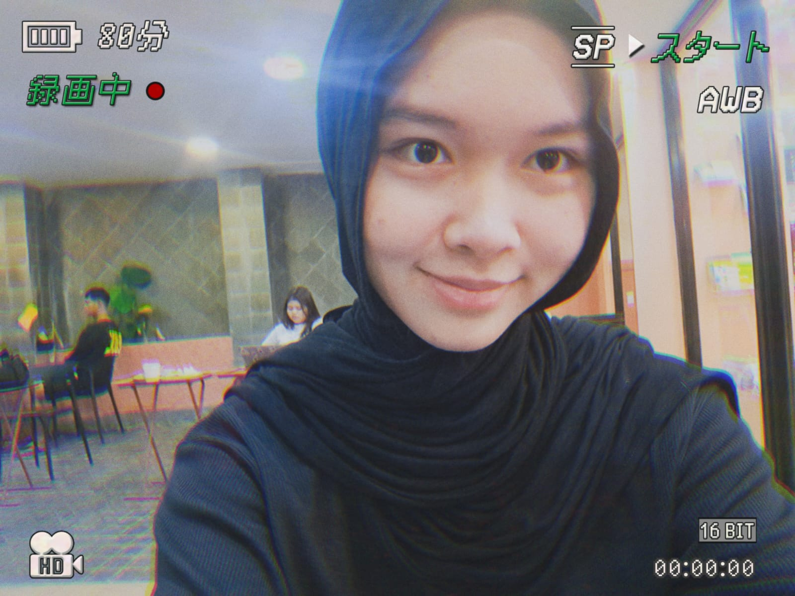

Eksplorasi lengkap unsur, rumus, sudut, busur, juring, dan garis singgung lingkaran — disertai 20 soal latihan pilihan ganda.
Titik yang berada tepat di tengah-tengah lingkaran. Semua titik pada lingkaran berjarak sama terhadap titik pusat.
Garis lurus dari titik pusat ke titik pada keliling lingkaran.
Garis lurus yang menghubungkan dua titik pada keliling dan melalui titik pusat. d = 2r
Bagian dari keliling lingkaran. Ada busur minor (kecil) dan busur mayor (besar).
Garis lurus yang menghubungkan dua titik pada keliling lingkaran (tidak harus melalui pusat).
Jarak terpendek dari titik pusat ke tali busur — selalu tegak lurus terhadap tali busur.
Daerah yang dibatasi dua jari-jari dan busur yang diapit oleh keduanya.
Daerah yang dibatasi sebuah tali busur dan busurnya.
Gunakan π = 22/7 jika r/d kelipatan 7, π = 3,14 untuk bilangan lainnya.
π = 22/7 → jika r atau d merupakan kelipatan 7
π = 3,14 → untuk bilangan lainnya
Jari-jari = 14 cm, maka:
K = 2 × 22/7 × 14 = 88 cm
L = 22/7 × 14² = 616 cm²
Titik sudutnya di pusat lingkaran (O). Dibentuk oleh dua jari-jari.
Titik sudutnya pada keliling lingkaran. Dibentuk oleh dua tali busur.
Sudut keliling yang menghadap diameter selalu bernilai 90° (siku-siku).
Semua rumus ini menggunakan perbandingan sudut pusat α terhadap 360°.
Menggunakan trigonometri — sin setengah sudut pusat.
r = 21 cm, α = 120°
Busur = (120/360) × 2 × 22/7 × 21 = 44 cm
Tali Busur = 2 × 21 × sin(60°) = 21√3 cm
Tidak menyilang. Berada di sisi luar kedua lingkaran.
Menyilang di antara kedua lingkaran.
j = 26, R = 15, r = 5
GSPL = √(676 − 100) = √576 = 24 cm
Klik pilihan jawaban untuk memeriksa. Kunci jawaban tersedia di bawah setiap soal setelah dipilih.

Sistem Informasi Jaringan & Aplikasi
Siswi kelas XI SIJA 2 SMK Negeri 7 Semarang. Tertarik pada pemrograman, desain sistem, dan teknologi informasi.
Program Keahlian Sistem Informasi Jaringan & Aplikasi
Tahun Ajaran 2024 / 2025 · Kelas XI SIJA 2
Website ini dibuat sebagai bagian dari tugas pembelajaran materi Geometri Lingkaran, menggabungkan pemahaman matematika dengan kemampuan teknologi informasi.